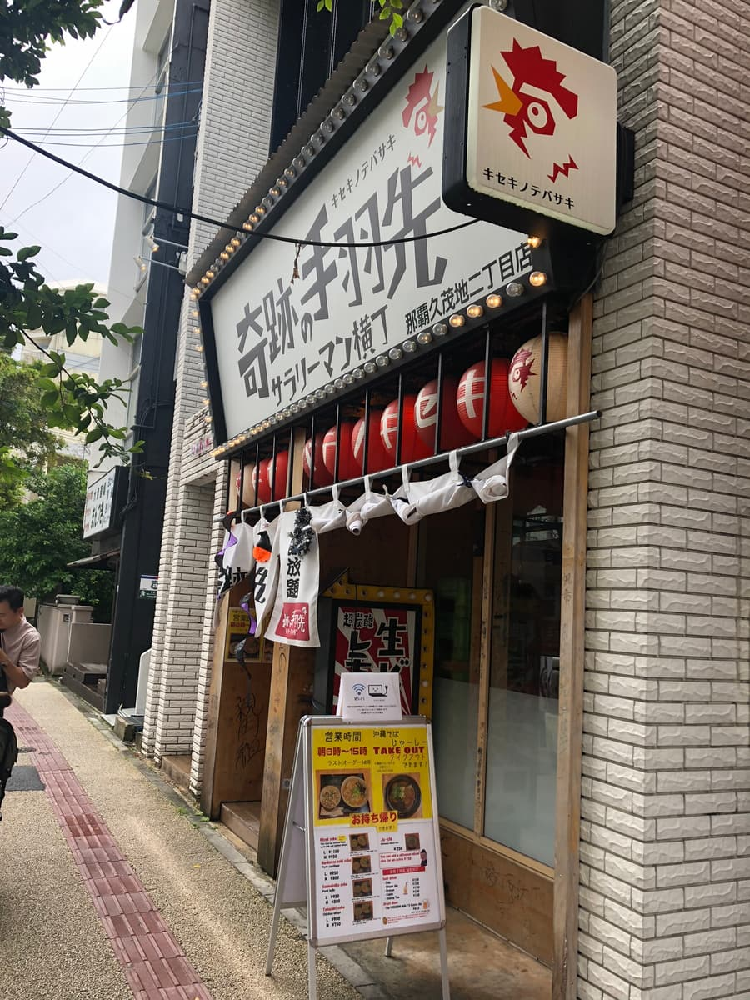
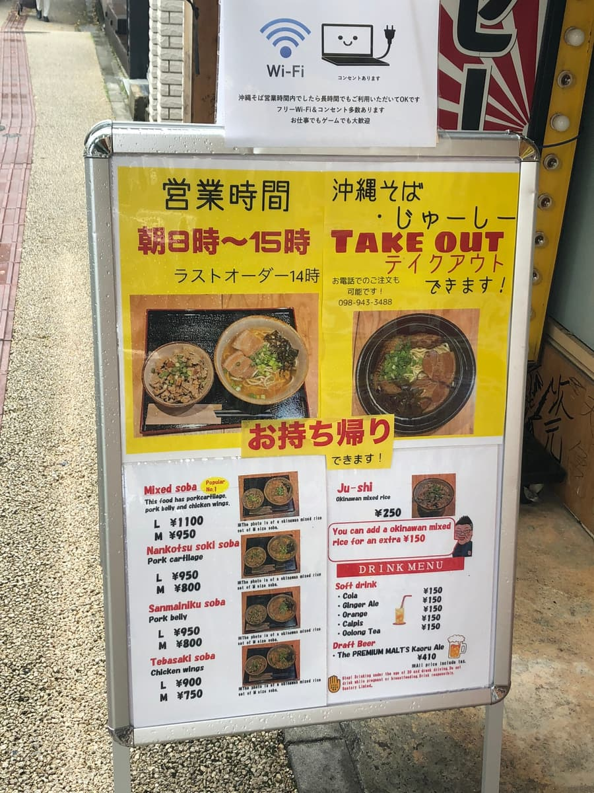
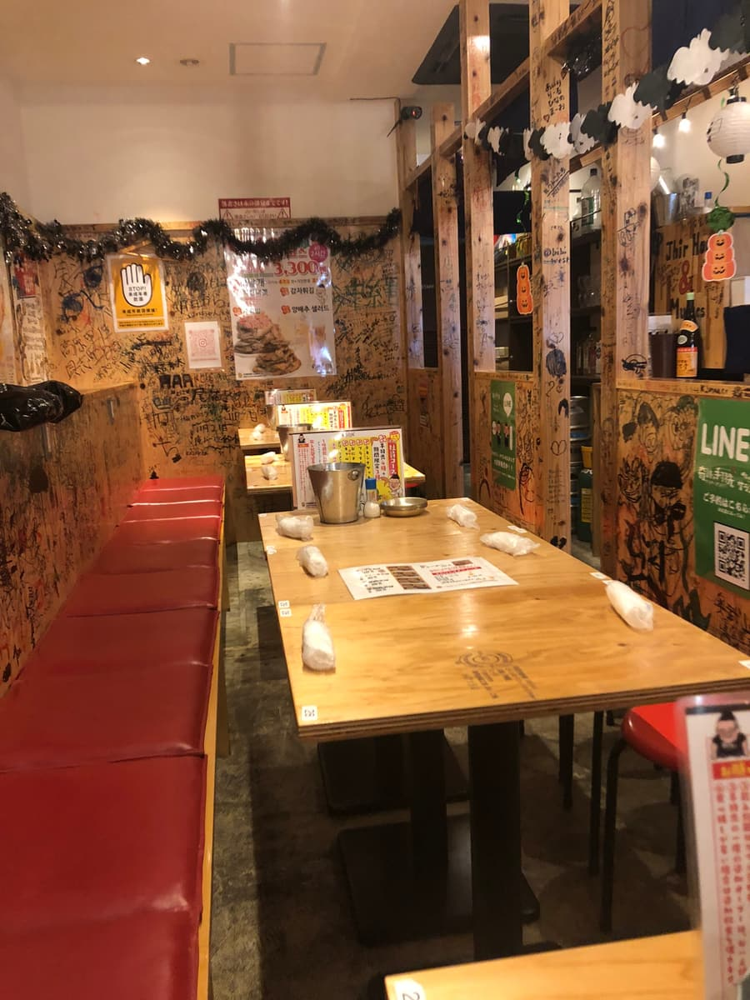
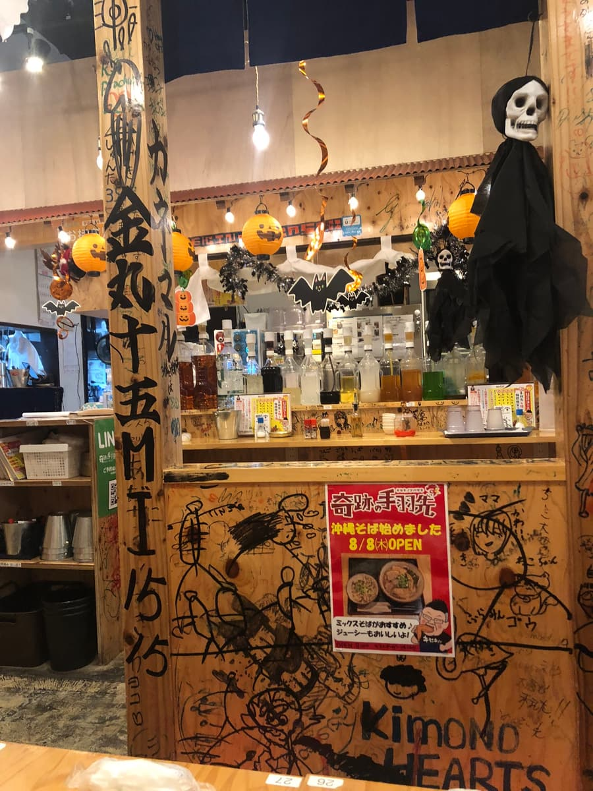
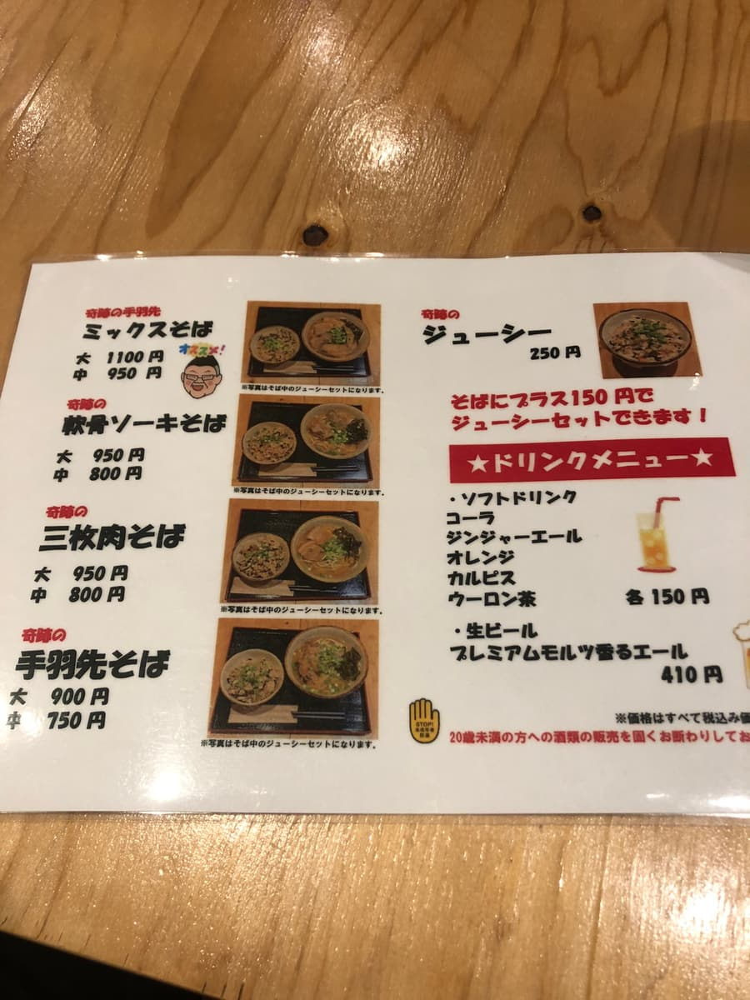
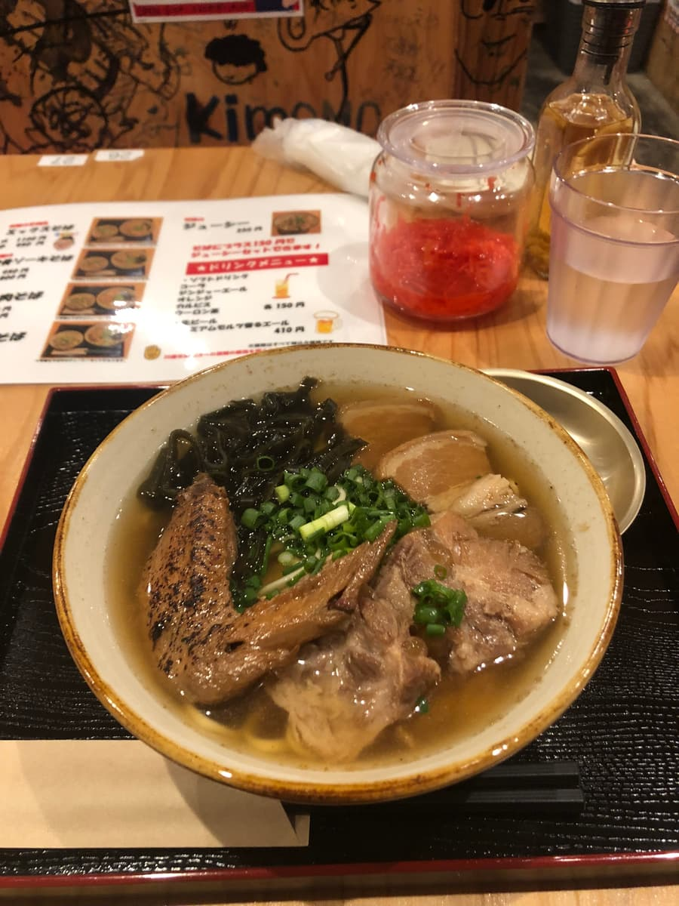
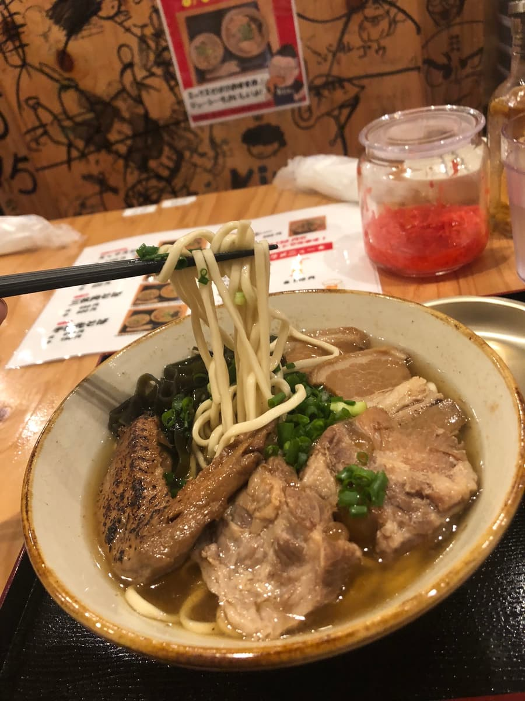

這篇文章是用AI（Chat GPT 4o）製作，再由我部分加筆😁
沖繩麵巡禮🚶♂️2024年10月吃的😁來到了位於那霸市久茂地的「奇跡の手羽先」！✨

因為是沖繩麵集章活動的參加店，是我一直很在意的店。光看店名就很獨特，讓人興奮期待會吃到什麼樣的麵！😄
店面外觀以紅燈籠為標誌，一眼就能知道「就是這裡！」的設計。



走進店內，整面牆壁遍布塗鴉藝術，是帶點懷舊、充滿玩心的空間。平常也兼營居酒屋，所以是家庭般輕鬆的氛圍。🍻

這次品嚐的是「ミックスそば」（大份 1100日圓）。因為是菜單中的推薦，期待很高！端上來的麵，放滿了軟骨排骨、三層肉、雞翅等配料，光看外觀就份量十足✨

先喝一口湯。是鰹魚高湯很夠味的調味，這個也很好喝！😋 是居酒屋特有、很有衝擊力的調味，可以想像很適合當喝酒後的收尾。不過喜歡清爽的人可能會覺得太濃。

接著是麵。是細直麵類型，煮得偏軟。與湯頭很搭，滑溜入口的感覺令人印象深刻。不過如果期待沖繩麵特有的粗麵或嚼勁的話，可能會覺得有點不夠🤔我個人比較喜歡再有點嚼勁的。
然後是配料！可說是這次亮點的「雞翅」，雖然是第一次體驗，但意外地很適合沖繩麵！湯汁吸得很飽，鬆軟入口即化的軟嫩讓人無法抗拒😄 軟骨排骨也軟嫩，軟到幾乎不用咬的口感絕妙。另一方面，三層肉還殘留著一點筋感，如果能改善的話應該會更好，是這樣的印象。
「奇跡の手羽先」的沖繩麵，不愧是居酒屋菜單，整體調味紮實，很有吃頭。雞翅這種獨特的配料很有個性，有著其他店吃不到的特別感。作為集章活動參加店，也是令人印象深刻的一碗！🎉
評分（9.5分/15分）：整體是普通好吃的沖繩麵。是能享受獨特雞翅麵的一碗！下次也想試試其他菜單和居酒屋料理！🍜✨😊
麵：★★★☆☆（3）
湯頭：★★★☆☆（3）
配料：★★★✬☆（3.5）